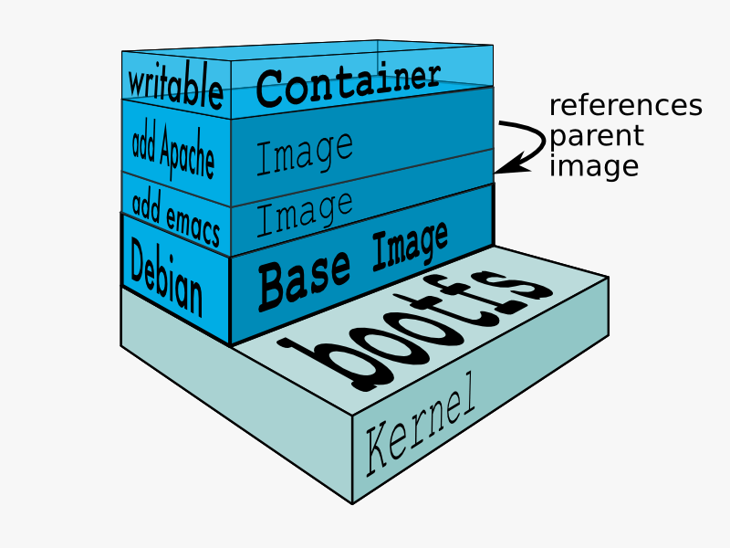

Docker
Qu'est ce que ça change ?
VM vs Container
Pas d'OS = Rapidité + Economie de ressources

Container et Image
- IMAGE = snapshot read only d'une machine démarrée
- CONTAINER = instance d'une image + partition écriture

I. Partager une BDD de prod pour l'équipe de dev
a) Charger une instance pour tout le monde
b) Charger une instance par dev
I. Partager une BDD avec Docker
docker pull postgres:9.1.15- Créer une image : postgres + dump
- Chaque dev lance son container
Isolation & économies de ressources
II. Environement de développement
Problème :
- Setup trop long
- Works on my machine
Proposition:
Créer et partager
un environement de dev
dans un container Docker
Dockerfile
- FROM debian:wheezy
- RUN apt-get install java8
- RUN apt-get install tomcat7
- ADD /host-sources /tomcat
- EXPOSE 8080
- CMD service tomcat7 start

$ docker build ; docker run
Orchestration
multi containers
Docker compose

Countinous Integration
Récap Docker
- Container = VM allégée créée a partir d'une image
- Facile de créer, lancer et partager des environements
"Be a lazy (but productive) developer"
Ressources
- Discovering Docker - Geoffrey Bachelet
- 45 minutes pour comprendre Docker - Jérôme Petazzoni
- Meetup Docker Lyon - 16/03
- Integration tests with Docker - Matthieu Baechler
Tests d'intégration
- 100 tests d'intégration
- MongoDB
- Jeu de données identique pour chaque test
Test1 ? import ? Test2 ? import ...
On passe la seconde
- Lancer le container avant chaque test (<1s)
- @Before : "HTTP POST /containers/create"
- 1 thread par test
Marche aussi pour des tests fonctionnels Sélénium
Bonus: Migration BDD
- Charger le dump : ☕
- Lancer le script
- Erreur !
- Recharger le dump : ☕
- Lancer le container : üì∑
- Lancer le script
- Erreur !
- Recharger le dump : üì∑